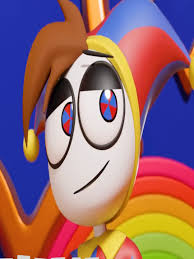

essa musica n sai da minha cabeça e é bem cringe KSKSKSKSK
Una animación nos muestra que el próximo integrante de Digital Circus será un chico que se parece mucho a Pomni. Pomni inmediatamente se enamora de él, pero Ragatha también, lo que hace que ellas dos empiecen a competir por el amor de él.
El chico le comenta a Jax que le encantaría jugar el nuevo GTA 6, por lo que Pomni escucha esto e inmediatamente va, lo compra y se lo regala.
Pero luego llega Ragatha, quien no solo trae el GTA 6 sino que le trae toda la colección de esta franquicia. Luego, mientras el chico nuevo y Jax están jugando, comentan que les está dando hambre, a lo que una vez más Pomni escucha esto y va y les prepara unas deliciosas galletas. Lamentablemente, Ragatha ya se le había adelantado y les había dado todo un bufet de comida, por lo que Pomni ahora sí sintió que definitivamente había perdido la atención de este chico y Ragatha se lo había ganado. Afortunadamente, el chico se da cuenta de que Pomni está triste y va inmediatamente a consolarla. Un final muy feliz para Pomni.
